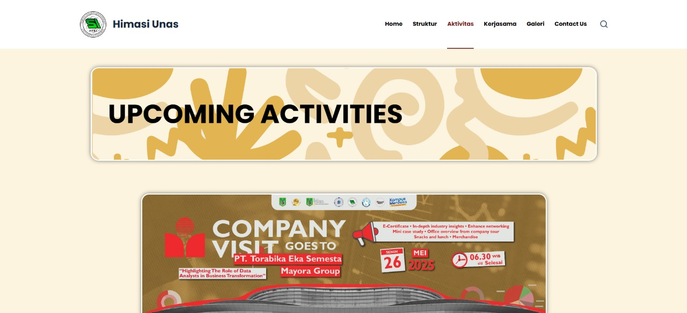
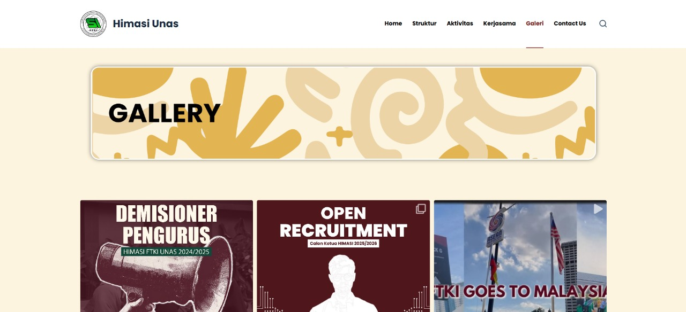
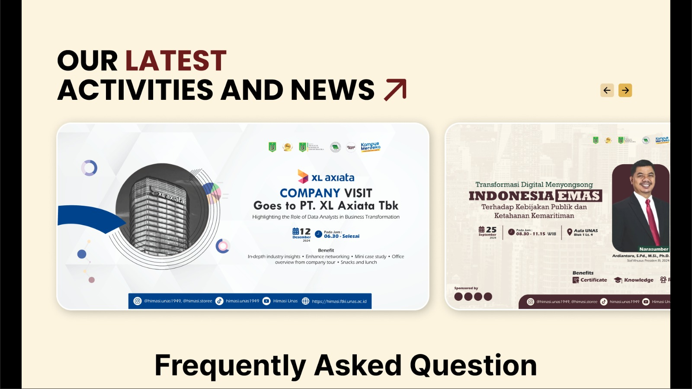
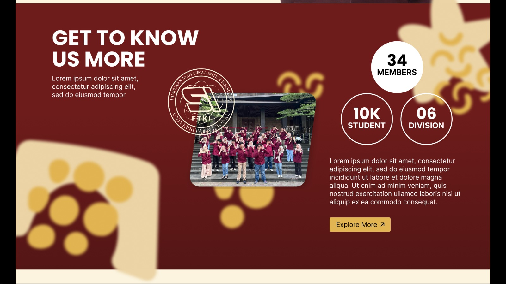
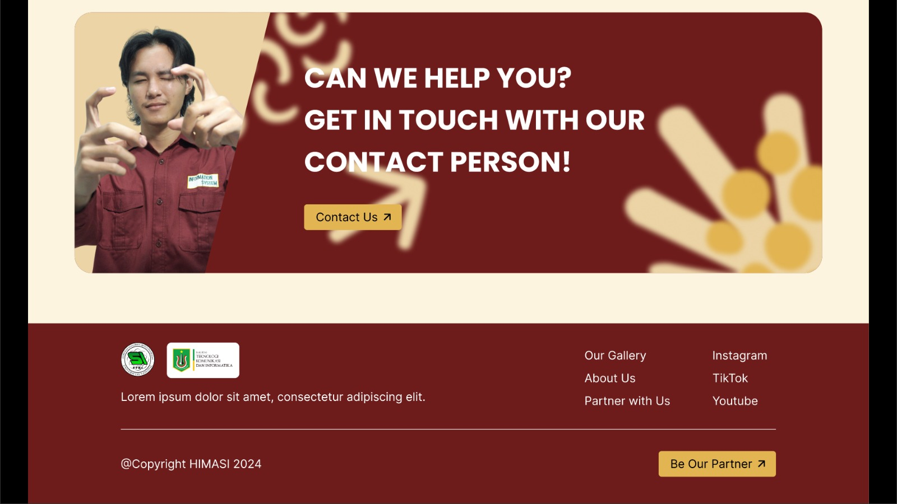

Website HIMASI UNAS
Platform informasi terpusat untuk kegiatan Himpunan Mahasiswa Sistem Informasi Universitas Nasional.
Deskripsi Proyek
Sebagai anggota Divisi Penelitian dan Pengembangan (Litbang), saya berperan aktif dalam pengembangan dan pengelolaan website resmi HIMASI. Platform ini berfungsi sebagai pusat informasi utama bagi mahasiswa Sistem Informasi, menyajikan berita terkini, jadwal seminar, informasi webinar, dan dokumentasi kegiatan.
Saya bertanggung jawab atas beberapa aspek teknis menggunakan WordPress, mulai dari kustomisasi tema, manajemen plugin, hingga memastikan konten yang disajikan selalu relevan dan terstruktur. Proyek ini juga mengasah kemampuan saya dalam mengelola sebuah platform digital yang melayani banyak pengguna.
Tantangan & Solusi
Tantangan terbesar adalah menciptakan website yang informatif namun tetap mudah diakses dan dikelola oleh anggota himpunan lainnya. Saya mengatasinya dengan memilih tema yang fleksibel dan mudah dikustomisasi, serta mengimplementasikan Content Management System (CMS) WordPress secara efektif. Dengan menyediakan antarmuka yang intuitif di backend, proses pembaruan konten oleh tim menjadi lebih efisien, yang pada akhirnya berhasil meningkatkan keterlibatan anggota.
Teknologi Utama
Tautan
Website bersifat internal untuk organisasi.
Galeri Fitur

Halaman Utama
Tampilan utama yang menyambut anggota dan pengunjung.

Publikasi Acara
Menampilkan poster seminar dan webinar mendatang.

Struktur Organisasi
Halaman yang menampilkan bagan kepengurusan himpunan.

Galeri Kegiatan
Kumpulan dokumentasi foto dari acara yang telah berlangsung.

Detail Seminar Nasional
Halaman informasi lengkap untuk acara seminar nasional.

Tentang HIMASI
Deskripsi visi, misi, dan sejarah singkat himpunan.

Footer Website
Bagian bawah halaman dengan informasi kontak dan media sosial.